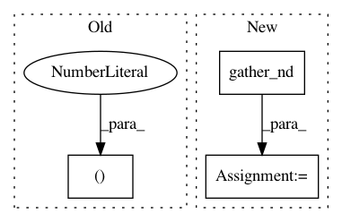

62d2ea56ae4a090aa68baf133137982a836700bd,thumt/utils/search.py,,create_inference_graph,#Any#Any#Any#,430
Before Change
return ids[:, :top_beams, 1:]
else:
if top_beams == 1:
return ids[:, 0, 1:], scores[:, 0]
else:
return ids[:, :top_beams, 1:], scores[:, :top_beams]
After Change
// shape of coordinates: [batch, beam_size, 2]
batch_pos = compute_batch_indices(batch_size, beam_size)
coordinates = tf.stack([batch_pos, indices], axis=2)
ids = tf.gather_nd(ids, coordinates)
// Return `top_beams` decoding
// (also remove initial id from the beam search)
return ids[:, :top_beams, 1:], scores[:, :top_beams]
In pattern: SUPERPATTERN
Frequency: 3
Non-data size: 3
Instances
Project Name: THUNLP-MT/THUMT
Commit Name: 62d2ea56ae4a090aa68baf133137982a836700bd
Time: 2018-01-25
Author: playinf@stu.xmu.edu.cn
File Name: thumt/utils/search.py
Class Name:
Method Name: create_inference_graph
Project Name: tensorflow/transform
Commit Name: 319d76de1d740a0500b9bc321ddc40bf3c032f71
Time: 2021-01-26
Author: zoy@google.com
File Name: tensorflow_transform/tf_utils.py
Class Name:
Method Name: reduce_batch_count_mean_and_var
Project Name: Bihaqo/t3f
Commit Name: 7ca9b35c96b9f9d4300fe32e0c417cfc95e4d094
Time: 2017-10-16
Author: novikov@bayesgroup.ru
File Name: t3f/ops.py
Class Name:
Method Name: tt_sparse_flat_inner